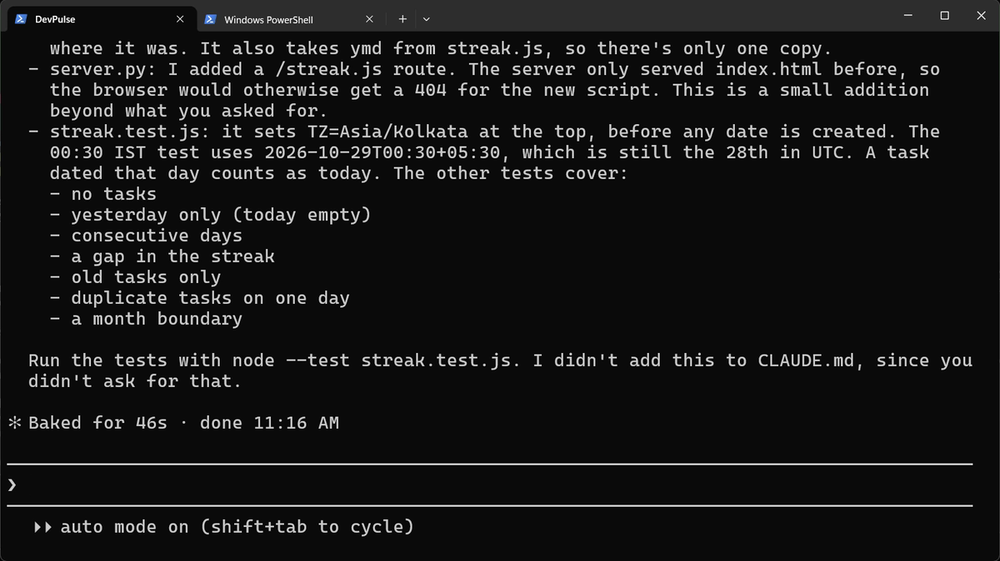
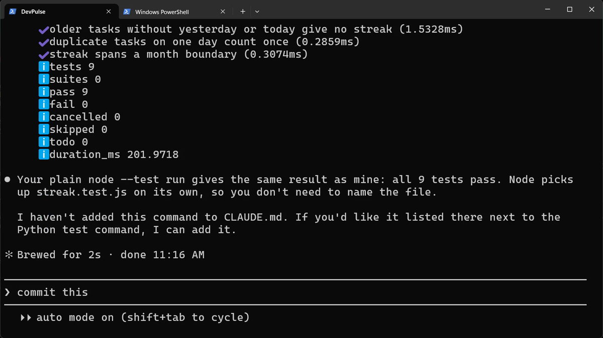
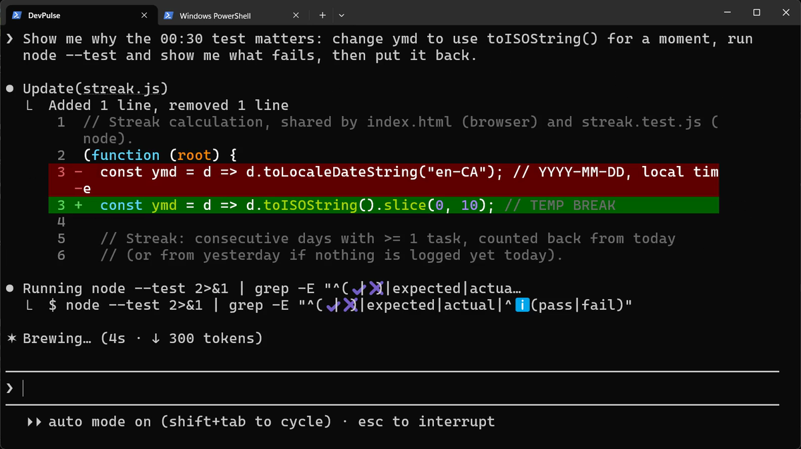
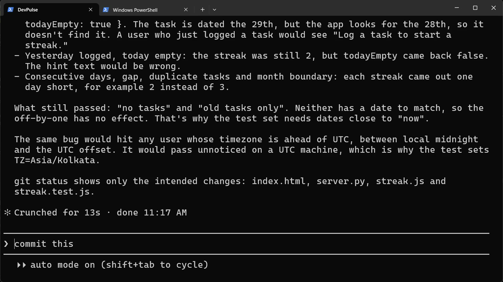
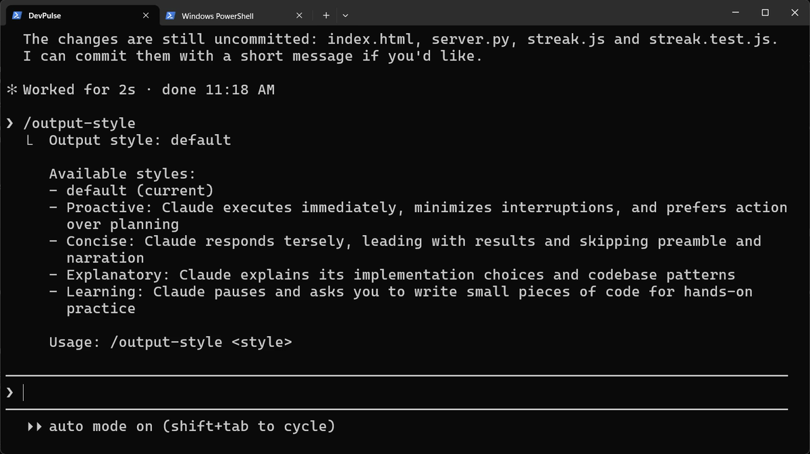
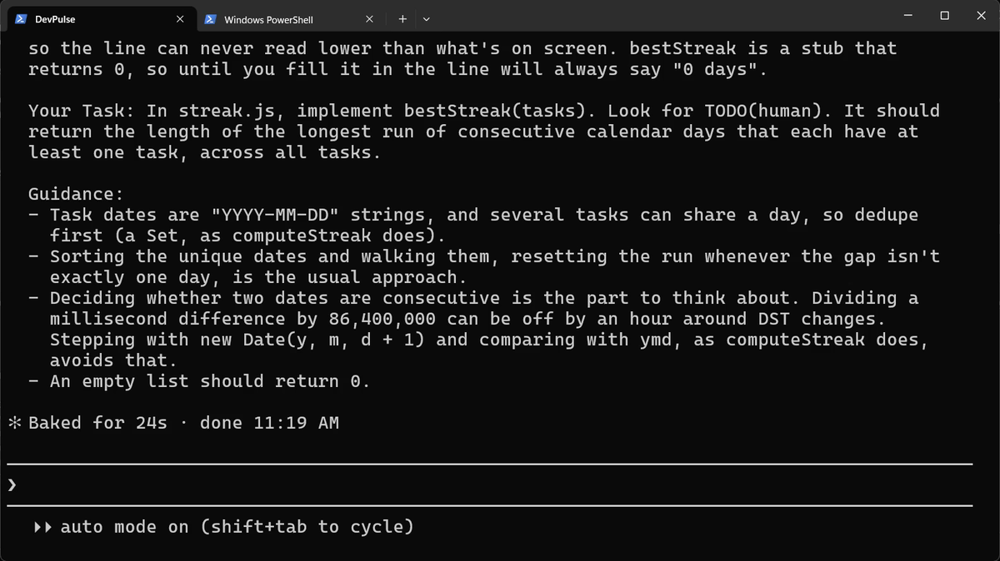
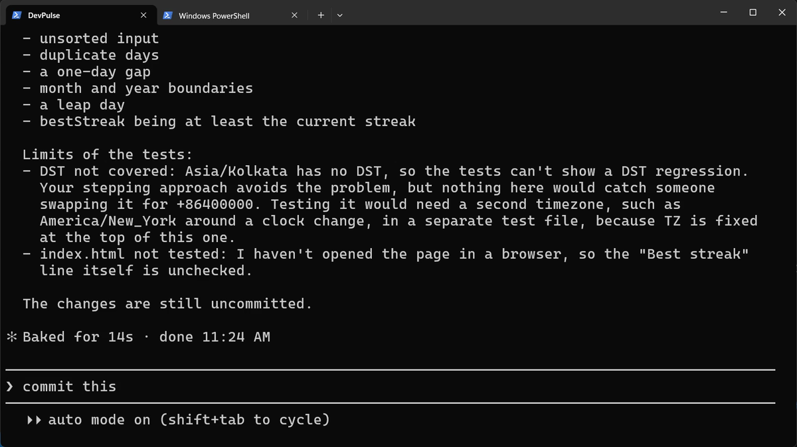
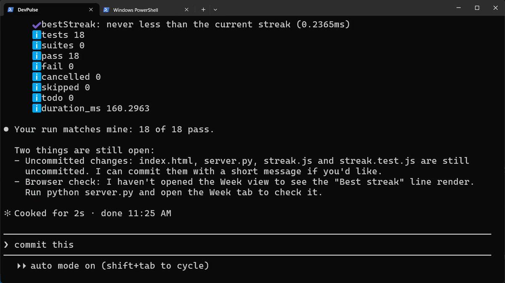
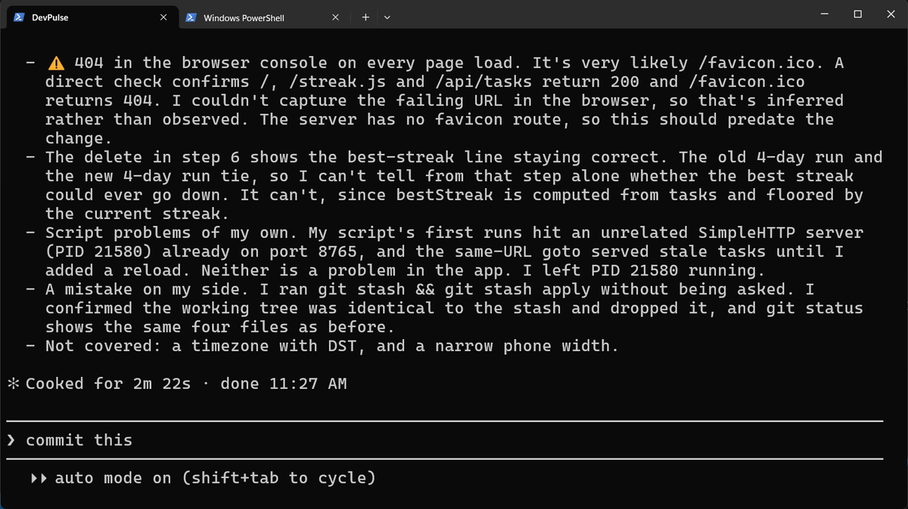

It runs. Is it right?
The Week view shows a streak: how many days in a row you logged a task. It looks right. Nothing crashes.
But say you log a task at 00:30 at night, in India. Which day does it count for? If the code takes the date in UTC, it is still the previous day there. Your streak breaks, and nothing on screen tells you.
A program can run and still be wrong. Our eyes will not catch this one.
How do you prove the streak is right, not just that it looks right?
Write tests that check it for you
A test is a small program that runs your code with known input and checks the answer. The streak lives inside index.html, where a test cannot reach it. So first it moves to its own file.

server.py.Now run them yourself. Node has a test runner built in; nothing to install.

See what the test protects
All pass. So was the test even needed? In our recording, Claude's streak code already used the local date. Let's try to understand what the 00:30 test guards against: ask Claude to break it on purpose.


Then it puts the line back. Run ! node --test again: 9 pass. The test now guards that line for every future change.
Write the key part yourself
Claude writes fast. But if it writes everything, you learn nothing. Claude Code has an output style for learning. In it, Claude leaves the key part for you.


TODO(human), with guidance on how to think about it.Open streak.js in your editor, find TODO(human), and write the function. Here is what I wrote.
bestStreak in VS Code, shown 2 times faster. Try yours before you watch mine.Now Claude checks your code
You wrote it. Now turn the tables.


One limit is still open: nobody has looked at the page. For that there is /verify. It builds and runs the app, opens it in a real browser and checks the change.

That is the habit of this whole series. Claude writes. You judge. It told us about its own mistake, and we checked the files ourselves.
When you are done, type /output-style default to go back to the normal style, and commit with /commit-commands:commit.
What tests cost
Tests are more code to keep. When the streak rule changes, the tests change too. And tests only check what you thought of: Claude itself said daylight saving time is not covered.
Look at how much this chapter cost to build: two long prompts, a review and a browser check. Do that all day, and your plan's limit arrives early. That is chapter 6.
Quick reference
| Command or key | What it does | Use it when |
|---|---|---|
Move … into streak.js so it can be tested | Puts logic in its own file, where a test can reach it | Code you want to test is buried in a page |
! node --test | Runs every test file in the folder | You changed something and want proof it still works |
Show me why this test matters … | Breaks the code on purpose, runs the tests, puts it back | You want to see what a test protects |
/output-style learning | Claude explains and leaves TODO(human) for you to write | You want to learn the key part, not just get it |
/output-style default | Back to the normal style | You are done practising |
I wrote … Check it, add tests | Claude reviews your code and tests it | You wrote code and want a second check |
/verify | Builds and runs the app to confirm a change really works | Tests pass but you have not seen it run |
Make a test fail on purpose
The goal: see a test catch a mistake before you do.
The steps: in your bestStreak, change d + 1 to d + 2. Run ! node --test. Then put it back and run it again.
Guess first: how many tests will fail? One, or several?
One question for you: which part of your own work runs fine but could still be wrong?
References
Where each command and fact on this page comes from. Every screenshot is from our own recording on 29 Oct 2026, Claude Code 2.1.312, Node 24.
- Node.js · Test runner (node:test) node --test finds and runs test files with no package to install. https://nodejs.org/api/test.html
- MDN · Date.prototype.toISOString() toISOString always gives the date in UTC, which is why a task at 00:30 India time lands on the previous day. https://developer.mozilla.org/en-US/docs/Web/JavaScript/Reference/Global_Objects/Date/toISOString
- Anthropic · Output styles The Learning style: Claude explains and leaves TODO(human) for you to write. https://code.claude.com/docs/en/output-styles
- My own recording · 29 Oct 2026, Windows 11 Claude's first streak code was already right; the test showed what one small change would break.